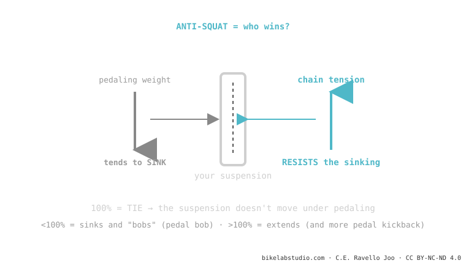

Anti-squat measures how much the design resists the suspension sinking under pedaling. When you pedal, your weight pushes the rear down; chain tension holds it up. If weight wins (low anti-squat), the bike rocks: that's pedal bob. At 100% it's a tie: it doesn't move. But raising it has a price — pedal kickback. It's part of suspension kinematics.
If your bike rocks like a hobby horse when you pedal hard while seated, it's not the shock: it's the geometry. And it has a name.
Have you noticed some bikes rock up and down when you pedal hard while others stay firm as a rock? That difference isn't set by the shock. It's set by anti-squat.
When you pedal, two things happen at once: your weight transfers rearward (tending to sink the suspension) and the chain pulls on the swingarm (tending to hold it up). Anti-squat is, quite simply, who wins that tug-of-war.

That's why a bike with good anti-squat in the sag zone climbs firm without you having to use the lockout all the time. It's "free" efficiency, straight from the factory.
Raising anti-squat sounds ideal — but it has a downside. To generate anti-squat, the chain has to pull hard on the swingarm, and that causes pedal kickback: over big hits, the chain stretches and kicks your pedals backward. Lots of anti-squat = a very efficient climbing bike, but with more kickback and sometimes less traction in the technical stuff. It's not a number to maximize: it's a balance that the engineer tunes according to what the bike is for.
Anti-squat isn't a single number: it depends on the sag you measure it at, the gear you're in (the chainring and cog change the chain angle) and how compressed the suspension is. That's why when a brand says "110% anti-squat", you always have to ask: at what sag and in what gear? Without that, the number is incomplete.
Low anti-squat in the sag zone: weight sinks the suspension with each pedal stroke (pedal bob).
A tie: the chain cancels the weight transfer and the suspension stays neutral. It doesn't mean "perfect", only "neither sinks nor extends" at that point.
No: it brings more pedal kickback and sometimes less traction. It's a balance, not something to maximize.
Tell us the model and how it feels; we'll tell you whether it's the frame (anti-squat) or the setup, and what to do. Message us on WhatsApp
© 2026 BikeLab Studio. Content under CC BY 4.0: you may copy, translate and publish it, even for commercial purposes. Citation is mandatory. Without attribution, the license terminates automatically (CC BY 4.0, §6.a) and the use becomes copyright infringement: we request the removal of the content and its deindexing. · Design and ownership: Carlos Ravello Joo